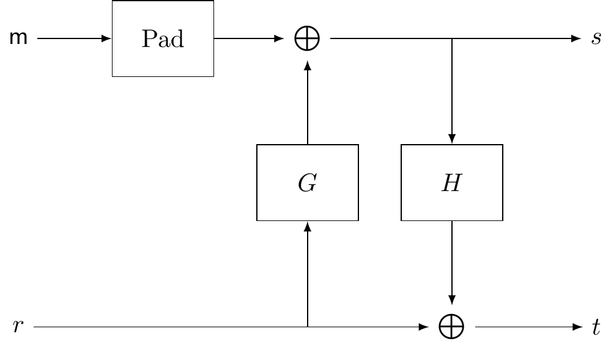

8 Public-key encryption
Equipped with the mathematical tools developed in the previous two chapters, we are now in a position to introduce the concept of public-key cryptography, and present some of the best-known constructions in this setting. More precisely, we will learn about:
The paradigm of public-key cryptography.
The RSA encryption scheme and its security.
8.1 Public-key cryptography
In Section 1, we introduced a symmetric encryption scheme, in which two parties use a shared secret key to communicate privately. We still have not solved the problem of establishing this common key in a secure way. We will now introduce a new type of encryption scheme, which stems from the following idea: what if we don’t need a shared secret key to have secure communications? This idea was introduced by Diffie and Hellman in the renowned paper New directions in cryptography,36 which is considered to be the birth of modern cryptography.
They introduced the notion of asymmetric or public-key encryption, which on a high level works as follows. Imagine that Alice wishes to send a message to Bob. Bob produces two keys \(\mathsf{pk}\) and \(\mathsf{sk}\), crafted in such a way that whatever is encrypted with \(\mathsf{pk}\) can be decrypted only with \(\mathsf{sk}\). That is, for any message \(\mathsf{m}\), \[\mathsf{Dec}_{\mathsf{sk}}\left(\mathsf{Enc}_{\mathsf{pk}}(\mathsf{m})\right)=\mathsf{m}.\] Then Bob publishes \(\mathsf{pk}\), so that anyone can know it, and keeps \(\mathsf{sk}\) secret. For this reason, \(\mathsf{pk}\) is known as Bob’s public key and \(\mathsf{sk}\) is Bob’s secret key.
Definition 8.1 An asymmetric (or public-key) encryption scheme is composed of three efficient algorithms: \[(\mathsf{KeyGen},\mathsf{Enc},\mathsf{Dec}).\]
The \(\mathsf{KeyGen}\) algorithm chooses two keys \(\mathsf{pk},\mathsf{sk}\) of length \(\lambda\), according to some probability distribution, and such that \[\mathsf{Dec}_{\mathsf{sk}}\left(\mathsf{Enc}_{\mathsf{pk}}(\mathsf{m})\right)=\mathsf{m}.\]
The \(\mathsf{Enc}\) algorithm uses the public key \(\mathsf{pk}\) to encrypt a message \(\mathsf{m}\), and outputs the encrypted message \[\mathsf{c}=\mathsf{Enc}_{\mathsf{pk}}(\mathsf{m}).\]
The \(\mathsf{Dec}\) algorithm uses the secret key \(\mathsf{sk}\) to decrypt an encrypted message \(\mathsf{c}\), recovering \(\mathsf{m}\) as \[\mathsf{Dec}_{\mathsf{sk}}(\mathsf{c})=\mathsf{m}.\]
In this context, \(\mathsf{m}\) is called the plaintext, and \(\mathsf{c}\) is said to be its corresponding ciphertext. The keys \(\mathsf{pk}\) and \(\mathsf{sk}\) are the public key and secret key, respectively.
Note that, for such a construction to be secure, we need that the secret key cannot be efficiently computed from the public key. Otherwise, since the public key is known to everybody, in particular attackers, this could be exploited to recover the secret key and decrypt any message.
Another difference with symmetric encryption is that the structure of the keys is different. In symmetric encryption, we had a key associated to two parties, Alice and Bob, which was used to send messages both ways. But, in the explanation above, we just described how Alice sends messages to Bob, but not the other way around. Note that if Bob tried to use \(\mathsf{sk}\) to encrypt, with the hope that Alice decrypts with \(\mathsf{pk}\), then anybody would be able to decrypt, since \(\mathsf{pk}\) is public. Therefore, Alice needs another pair of keys, one public that is used for everybody else to encrypt messages to Alice, and one secret, that is used by Alice to decrypt messages addressed to her.
This might seem like a downgrade, since before we needed only one key and now we have four in total. We emphasize, however, that none of the secret keys need to be shared, and the public ones can be shared through an insecure channel. Moreover, we actually have less keys in the asymmetric case when many parties are involved, as is highlighted by the following exercise.
Exercise 8.1 Suppose that we have \(n\) parties, and each of them wishes to communicate with all the others. Compute how many keys are needed if they use:
A symmetric encryption scheme.
A public-key encryption scheme.
8.2 The RSA encryption scheme
Although Diffie and Hellman introduced the idea of public-key encryption in 1976, it was not until 1978 that Rivest, Shamir and Adleman published the first public-key encryption scheme, which became known as the RSA encryption scheme.37 The scheme works as follows.
\(\mathsf{KeyGen}\): on input a security parameter \(\lambda\), choose two uniformly random prime numbers \(p,q\) of bitlength \(\lambda/2\), and let \(N=pq\). We will work in \(\mathbb{Z}_N\), and call \(N\) an RSA modulus. Choose \(e\in\mathbb{Z}_N\), and compute \[d\equiv e^{-1}\pmod{\varphi(N)}.\] Output the public key \[\mathsf{pk}=(N,e),\] and the secret key \[\mathsf{sk}=d.\] Note that it is crucial that \(p,q\) are uniformly random, whereas \(e\) can be a fixed parameter.38
\(\mathsf{Enc}\): given a message \(\mathsf{m}\in\mathbb{Z}_N\), and the receiver’s public key \((N,e)\), output a ciphertext \[\mathsf{m}^{e}\bmod{N}.\]
\(\mathsf{Dec}\): given a ciphertext \(\mathsf{c}\) and the secret key \(d\), output \[\mathsf{c}^{d}\bmod{N}.\]
There are a few things to consider here. The first is, why does this even work? That is, how can we be sure that the original message is recovered after encryption and decryption. We observe that, given a message \(\mathsf{m}\), we have that \[\mathsf{Dec}_{\mathsf{sk}}(\mathsf{Enc}_{\mathsf{pk}}(\mathsf{m}))=\mathsf{Dec}_{\mathsf{sk}}(\mathsf{m}^e\bmod{N})=\left(\mathsf{m}^{e}\right)^d\bmod{N}=\mathsf{m}^{ed}\bmod{N}.\] Now, we use that \[d\equiv e^{-1}\pmod{\varphi(N)},\] which means that there is an integer \(k\) such that \[de=k\varphi(N)+1.\] Thus, by plugging this into the expression above, we have \[\mathsf{m}^{ed}\bmod{N}=\mathsf{m}^{k\varphi(N)+1}\bmod{N}=\left(\left(\mathsf{m}^{\varphi(N)}\right)^k\cdot\mathsf{m}\right)\bmod{N}.\] Finally, we use Euler’s theorem (Proposition 7.3) and Proposition 7.5, which tell us that \[\mathsf{m}^{\varphi(N)}\bmod{N}=1,\] and therefore \[\mathsf{m}^{ed}\bmod{N}=\mathsf{m}.\] This proves that decryption indeed reverses encryption.
A second consideration is: are the three algorithms involved efficient? It is easy to see that \(\mathsf{Enc}\) and \(\mathsf{Dec}\) are efficient, since they amount to one modular exponentiation each, which we have seen that is an efficient computation (Section 6.4). Let us analyze the \(\mathsf{KeyGen}\) algorithm by breaking it into these steps:
Sample prime numbers of size \(\lambda\).
Compute \(N=pq\).
Compute \(\varphi(N)\).
Compute the inverse of \(e\) modulo \(\varphi(N)\).
Step (1) can be further broken into two parts: sample a random number of length \(\lambda\), and recognize whether it is a prime or not. We know we can sample random numbers efficiently and, as discussed in Section 6.1 and Appendix B, there are efficient algorithms to determine the primality of a number.39
So the strategy is to sample random numbers until we find a prime. But how many tries do we need? The prime number theorem (Proposition 6.3) tells us that, for large numbers, the amount \(\pi(n)\) of primes up to \(n\) is roughly \(n/\log n\) which means that the probability of a random number being a prime is approximately \(1/\log n\). This means that, on average, we will need \(\log n=O(\lambda)\) tries before finding a prime. Thus, the total cost of step (1) is \(O(\lambda^3)\).
Step (2) is simple arithmetic, which is efficient. Computing \(\phi(N)\) in step (3) is easy when knowing the factorization of \(N\) since, if \(N=pq\), then \[\varphi(N)=(p-1)(q-1),\] as a consequence of Proposition 6.8. Finally, step (4) can be performed efficiently using the Euclidean algorithm.
The following Sage code is a very simple implementation of the three algorithms composing the RSA encryption scheme.
# Set a security parameter
sec_param = 1024
### KEY GENERATION
# Generate two prime numbers of length sec_param/2
p = random_prime(2^(sec_param/2-1),2^(sec_param/2)-1)
q = random_prime(2^(sec_param/2-1),2^(sec_param/2)-1)
# Set the RSA modulus:
N = p*q
# Compute Euler's phi function on N:
phi = (p-1)*(q-1)
# Define Z_N, so that all operations are
# automatically reduced modulo N.
Z = Integers(N)
# Choose a public key:
e = 2^16 + 1
# Compute the corresponding secret key:
d = inverse_mod(e,phi) # Euclidean algorithm is used under the hood.
### ENCRYPTION - using pk = (N,e)
# Choose a message to encrypt.
m = 1766704380348666914344743843625136737766400008545151048420480921590988455650205660330488601346206061875826343297391617046317582074537509379708354843527043248265272066232991516996098399031098469466906571566159583240626991926476312991813498057350788070826660741984814907490494865792846706478975249596131279388
# Check that the message fits in Z_N.
if (m >= N):
print("Message too large.")
else:
# Encrypt the message
c = Z(m)^e # Z(m) is written instead of m so that Sage recognizes m
# as an element of Z_N, and performs operations modulo N.
print("c = "+str(c))
### DECRYPTION - using sk = d
m = Z(c)^d
print("m = "+str(m))Exercise 8.2 In the code above, can we replace the line about
computing \(\varphi(N)\) by phi = euler_phi(N)?
8.3 Security of RSA
So we know that the scheme works and is efficient. It remains to discuss security. As mentioned above, the secret key should be hard to deduce from the public key, otherwise anyone would have access to it, and thus anyone would be able to decrypt.
By looking again at the generation of the secret key in \(\mathsf{KeyGen}\), we observe that it can be computed from \(e\) and \(\varphi(N)\). The parameters \(e\) and \(N\) are public, so what prevents attackers from computing the secret key? The crucial point is that, in \(\mathsf{KeyGen}\), we were able to compute \(\varphi(N)\) from the factorization \((p,q)\) of \(N\), by computing \[\varphi(N)=(p-1)(q-1).\] However, if we do not know the factors of \(N\), we cannot carry out this computation. Moreover, this works both ways: it can be shown that knowledge of \(\varphi(N)\) allows to factor \(N\) efficiently. Thus, the security of RSA relies on the hardness of factorization.
Definition 8.2 Let \(p,q\) be large prime numbers, and let \(N=pq\). The factorization problem consists of recovering \(p,q\), given \(N\).
As mentioned in Section 6.1, there is no known algorithm for factoring a product of two large primes efficiently.
Hardness of factorization is a necessary condition for security but, unfortunately, not a sufficient one. That is, an adversary could still in principle decrypt a ciphertext without the need of the secret key, with some other technique. This motivates the introduction of the following problem.
Definition 8.3 Let \(p,q\) be large primes, and let \(N=pq\). Let \(e\in\mathbb{Z}_N\). The RSA problem consists of recovering \(\mathsf{m}\in\mathbb{Z}_N\), given \(N,e\) and \(\mathsf{m}^e\bmod{N}\).
Clearly if factorization is easy then the RSA problem is also easy, but the implication in the other direction is not known to be true or false so far. However, as is the case with the factorization problem, there have been extensive attacks against the RSA problem, and no better attack than factorization of \(N\) has been found. This provides a reasonable guarantee that the problem is indeed hard, even if we lack a formal proof.
For security against current computational power, most organizations suggest a security parameter of at least \(\lambda=2048\) (see https://www.keylength.com/). That is, an RSA modulus \(N\) of bitlength \(2048\) is believed to be secure against current factorization attempts. To date, the highest RSA modulus to be factored has bitlength \(829\), and took about \(2700\) core-years.40

So is this enough to call the RSA scheme secure? Unfortunately, no, since it is vulnerable to other attacks that do not depend on recovering the secret key. We consider the following scenario: suppose that Alice is sending Bob a date of the year, in the format \(DDMM\), where \(DD\) is the day and \(MM\) is the month. An attacker knows this, and also has access to Bob’s public key \((N,e)\), since anyone can obtain public keys. The attacker eavesdrops the ciphertext \(\mathsf{c}\) that Alice sends Bob, and then computes \[(DDMM)^{e}\bmod{N}\] for each \(DD\in\{1,\dots,31\}\) and \(MM\in\{1,\dots,12\}\). The attacker compares the list of results with \(\mathsf{c}\) until they find a match, which tells them the date that was encrypted in \(\mathsf{c}\). This is known as a chosen-plaintext attack (CPA), since the adversary can obtain the encryptions of messages of their own choice.
Below is some code for running this attack. As an attacker, we have
access to the security parameter \(\lambda\), the RSA modulus N, and the
encryption exponent e. We intercept some ciphertext c, and
run the attack by comparing c with the encryption of each
possible message.
### Auxiliary function
# Write day/month in the format DDMM
def format(day,month):
day = str(day)
month = str(month)
if len(day)<2:
day = "0" + day
if len(month)<2:
month = "0" + month
return int(day + month)
### CPA attack
# Known data
N = 5084923486342919837749158826454356403346569259981671106186333244915073155770076069992841087736392422153624652509603466938787643616193693073473157600021972806569653700645220307421997336878744077854611907151783228311349496598408945325528067737317894046858136344781889361465025184092329532181879347609645469411
Z = Integers(N)
e = 2^16 + 1
# Intercepted ciphertext
c = 105605073257617821289274662706975761114405451836859336022070629464826511380165185130471900685486223806100216503822026792593184983241872596132965357095523791203088732252839389155546759634409370409954409570109113362453081088475465706906936653890215874964553000419826116298403548222781967172784767448559073540
# Running the attack
for month in range(1,13):
for day in range(1,32):
m = format(day,month)
c_candidate = Z(m)^e
if c_candidate == c:
print("Recovered plaintext: "+str(m))The version of RSA described above is known as textbook RSA, because it is a version simplified for didactic purposes, but is not secure against chosen-plaintext attacks, and thus not secure for real-world use.
How could such an attack happened? We boil it down to three facts:
The receiver’s public key is known by the attacker, so the attacker can compute ciphertexts of messages of their choice.
The set of possible messages is small, so it is efficient for the attacker to compute ciphertexts of every possible message.
The encryption algorithm was deterministic, so the attacker can compare their list of ciphertexts with the intercepted ciphertext and find a match. Recall Principle 3 from the beginning of the course: there is no security without randomness.
Fact (1) happens by design of public-key schemes. There is not much we can do about fact (2) either, since a good encryption scheme should allow users to communicate any data. Therefore, to fix RSA we need to do something about fact (3).
The idea is to modify the message before running it through the RSA encryption algorithm, and add some randomness to it. There are many different proposals to achieve this, collectively known as padded RSA. We describe one successful variant known as RSA-OAEP.41
Unfortunately, it is not as simple as appending some random bits at the end of the message, and we need a more involved process. Let \[G:\{0,1\}^{k_0}\rightarrow\{0,1\}^{\ell+k_1},\qquad H:\{0,1\}^{\ell+k_1}\rightarrow \{0,1\}^{k_0}\] be two hash functions, where \(k_0,k_1\) are such that \(\lambda=O(k_0)\) and \(\lambda=O(k_2)\), and \(\ell+k_0+k_1\) is smaller than the bitlength of \(N\). We describe how to modify a message \(\mathsf{m}\) of bitlength \(\ell\). We introduce randomness by uniformly sampling a bitstring \(r\in\{0,1\}^{k_0}\), and then compute: \[s=\mathsf{m}|\mathbf 0^{k_1}\oplus G(r),\qquad t= r\oplus H(s),\] where \(\mathsf{m}|\mathbf 0^{k_1}\) is the bitstring \(\mathsf{m}\), concatenated with the string of zeros of length \(k_1\). Then, we set the new message as \(\hat{\mathsf{m}}=(s,t)\), which is then run through textbook RSA. Observe that \(s\in\{0,1\}^{\ell+k_1}\) and \(t\in\{0,1\}^{k_0}\), so the message \(\hat{\mathsf{m}}\) has the appropriate length.
We summarize the construction in the following diagram.

Exercise 8.3 Describe the decryption procedure that corresponds to RSA-OAEP.
With these modifications, we can finally claim that the RSA cryptosystem is secure.
Proposition 8.1 If the RSA problem is hard and \(G\) and \(H\) behave as ideal42 hash functions, then the RSA-OAEP encryption scheme is secure.
Note that the textbook version of RSA is also malleable. This means that, given a ciphertext of some message, it is easy to produce a ciphertext of a related message. For example, given a ciphertext \(\mathsf{c}\) for the message \(\mathsf{m}\), i.e. \[\mathsf{c}=\mathsf{m}^e\bmod{N},\] an adversary can compute \[\mathsf{c}'=2^e\mathsf{c}\bmod{N}=(2\mathsf{m})^e\bmod{N},\] which is a valid ciphertext for the message \(2\mathsf{m}\bmod{N}\). The OAEP transformation also makes the scheme non-malleable.
8.4 Efficiency optimizations
As discussed above, the algorithms involved in RSA are all efficient, although not particularly fast. In this section, we look at some efficiency tricks to speed up the computations.
A simple one is to choose the encryption exponent \(e\) so that its binary representation has many zeros. This has an impact on the computation of the exponentiation when the square-and-multiply algorithm (Section 6.4) is used. Recall that, for each bit, the algorithm consists of one squaring and, if the bit is \(1\), one multiplication, both operations modulo \(n\). By choosing an exponent like \(e=2^{n}+1\), with binary representation \[[e]_2=1\underbrace{0\dots0}_{n-1}1,\] we ensure that we skip most of the multiplications. In practice, often the exponent \(2^{16}+1\) is chosen.
Another possible optimization is to make use of the Chinese remainder theorem (Proposition 6.9), and perform the operations in \(\mathbb{Z}_p\) and \(\mathbb{Z}_q\), and then reconstruct the plaintext in \(\mathbb{Z}_N\), instead of working in \(\mathbb{Z}_N\) directly. Since \(p,q\) are half the size of \(N\), exponentiations are cheaper here, and overall the procedure is roughly four times faster. More precisely, let \(\mathsf{c}\in\mathbb{Z}_N\) be a ciphertext, and let \(d\in\mathbb{Z}_N\) be the secret key. We compute \[\begin{aligned} & \mathsf{c}_p = \mathsf{c}\bmod{p} & \mathsf{c}_q = \mathsf{c}\bmod{q},\\ & d_p = d\bmod{\varphi(p)},\qquad & d_q = d\bmod{\varphi(q)}, \end{aligned}\] and use these to decrypt in \(\mathbb{Z}_p\) and \(\mathbb{Z}_q\): \[\mathsf{m}_p = \mathsf{c}_p^{d_p} \bmod{p},\qquad \mathsf{m}_q = \mathsf{c}_q^{d_q} \bmod{q}.\] Now, we have \(\mathsf{m}_p\) and \(\mathsf{m}_q\), and the Chinese remainder theorem tells us that there is a unique \(\mathsf{m}\in\mathbb{Z}_N\) such that \[\begin{aligned} & \mathsf{m}\equiv \mathsf{m}_p \pmod{p}, & \mathsf{m}\equiv \mathsf{m}_q \pmod{q}, \end{aligned}\] and the second part of the theorem gives us a formula to explicitly recover such \(\mathsf{m}\).
Solved exercises
Exercise 8.4
- Sample a textbook RSA key for \(\lambda = 5\).
- Use your key to encrypt a message.
- Decrypt the encrypted message.
Solution.
We simply need to follow the \(\mathsf{KeyGen}\) algorithm. First we to sample 5-bit prime numbers, that is a pair of prime numbers in the range \([(10000)_2,(11111)_2] = [16, 31]\). Let us pick \(p = 17, q = 31\). We therefore have \(N = 527\), \(\phi(N) = 16\cdot 30 = 480\). Let us also use \(e=7\) for the public exponent. We compute the secret key \(d=e^{-1}\mod \phi(N) = 7^{-1}\mod 480\) via the Euclidian algorithm. We have: \[ \begin{aligned} 480 &= 68\cdot 7 + 4 \\ 7 &= 1\cdot 4 + 3 \\ 4 &= 1\cdot 3 + 1 \\ \end{aligned} \] Therefore we have: \[ \begin{aligned} 1 &= 4 - 1\cdot 3 = 4 - 1 \cdot (7 - 1\cdot 4) = -1\cdot 7 + 2\cdot 4 \\ &= - 1\cdot 7 + 2\cdot(480 - 68\cdot 7) \\ &= 2\cdot 480 - 137\cdot 7 \end{aligned} \] Therefore \(d \equiv -137\equiv 343\pmod 480\). Our key pair is \[ \mathsf{pk} = (527, 7),\qquad \mathsf{sk}=343 \]
Let’s encrypt \(m=42\). We need to compute \(c\equiv 42^7\pmod{527}\). We will use fast exponentiation for this. We have \(7 = 2^2 + 2^1 + 2^0\) and therefore \(c = 42^{2^2}\cdot 42^{2^1}\cdot 42^{2^0}\). We have: \[ \begin{aligned} 42^2 &\equiv 1764\equiv 183\pmod{527}\\ 42^4 &\equiv 42^2\cdot 42^2\equiv 183\cdot 183\equiv 33489\equiv 288\pmod{527} \end{aligned} \] and finally \[ c \equiv 42^{2^2}\cdot 42^{2^1}\cdot 42^{2^0} \equiv 288\cdot 183\cdot 42 \equiv 52704\cdot 42\equiv 4 \equiv 168\pmod{527} \]
The decryption is exactly like encryption as far as calculations are concerned. We simply use the secret exponent instead of the public one. We have \[ m \equiv 168^{343}\equiv\ldots\equiv 42 \]
Exercise 8.5 We show that the textbook RSA is malleable. Show how one can compute an encryption of the message \(m'=k\cdot m\) given only \(k\), the public key \((N,e)\) and an encryption of of \(m\).
Solution. Let \(c_m\) be an encryption of \(m\). We can compute an encryption of \(k\) as \(c_k = k^e\mod N\) and compute a new ciphertext \(c=c_m\cdot c_k\mod N\). We claim that \(c\) is the encryption of \(m'\) under the public key \((N,e)\). Indeed, trying to decrypt it we have: \[ c^d \equiv (c_m\cdot c_k)^{d} \equiv c_m^{d}\cdot c_k^{d} \equiv m^{e\cdot d}\cdot k^{e\cdot d} \equiv m\cdot k \equiv m'\mod N \]
Exercise 8.6
Consider a variation of the textbook RSA where we use twin primes, namely primes \(p,q\) such that \(p=q+2\). Show that this variation is not secure?
Generalize the above attack for pairs of prime \(p,q\) that are “close” to each other, i.e \(|p-q|\) is a small integer.
Solution.
The variation is not secure. The modulus \(N\) can be written as \(N=p(p+2)=p^2 + 2p\). Adding one on both sides we get \[ N+1 = p^2 + 2p + 1 = (p+1)^2 \] Now we can compute (over the integers) the value \(s = \sqrt{N+1}\) and we get \(s = p+1\). Therefore \(p=s-1\) and \(q = s+1\).
Assume w.l.o.g. that \(p>q\) and let \(p-q = 2k\) be the “distance” of the two primes. Note that this number is even since the two primes are odd numbers. We can now rewrite the two primes as \[ p = \frac{p+q}{2} + k, \qquad q = \frac{p+q}{2} - k \] and we can write the modulus \(N\) as \[ N = \left(\frac{p+q}{2} + k\right)\left(\frac{p+q}{2} - k\right) =\left(\frac{p+q}{2}\right)^2 - k^2 \] and therefore \(N + k^2 = \left(\frac{p+q}{2}\right)^2\). We can now test for every value of \(k\) (here we use the fact that this is a small integer) whether the value \(N+k^2\) is a perfect square, or in other words whether \(\sqrt{N+k^2}\in\mathbb{N}\). Assume this is the case for some \(k^*\). We have: \[ s = \sqrt{N+{k^*}^2} = \frac{p+q}{2} \] We can now set \(p = s + k^*\), \(q = s-k^*\). We claim this is the correct factorization of the modulus \(N\). Indeed we have \[ p\cdot q = (s + k^*)(s - k^*) = s^2 -k\cdot s + k\cdot s - k^* = s^2 - k^* = (N + {k^*}^2) - {k^*}^2 = N \]
Exercise 8.7 Alice wants to create a different RSA key to securely communicate with each of her friends. However, her computer is a bit old and looking for large primes takes a while. Alice decides to use the same prime \(p\) in all her moduli, that is, she create the RSA moduli \(N_i = p\cdot q_i\) for \(i\in \{1\ldots m\}\). This reduces the key generation time to about a half. Is Alice’s choice secure?
Solution. No, this is not secure at all. Specifically, we consider an attacker, Eve, who has access to all the public moduli \(N_i\) (recall these are part of the public key and therefore we can assume Eve has access to them). Eve does the following simple attack: she takes any pair of these, say \(N_1, N_2\) and she computes \(gcd(N_1, N_2)\). Since \(N_i = p\cdot q_i\) and \(q_i\)s are prime numbers, the only common divisor is \(p\), which is efficiently computed (recall the Euclidian algorithm is polynomial time). Having \(p\), she can compute for each \(i\) the value \(q_i = N_i/p\).
Exercise 8.8 (*)
Define an RSA group to be the group \(\mathbb{Z}_N^*\) where \(N\) is an RSA modulus, that is \(N=p\cdot q\) for \(p,q\) \(\lambda\)-bit prime numbers.
- Argue that the computational problem of finding the order of an RSA group is hard.
- Can you identify any non-trivial (i.e. not \(\mathbb{Z}_N^*\) or \(\{1\}\)) subgroup of an RSA group?
Solution.
The problem boils down to a simple observation: the order of the group \(\mathbb{Z}_N^*\) is by definition \(\phi(N)\). As we show above, knowing this value means that you can compute the factorization of \(N\) which is assumed to be a computationally hard problem.
By the Lagrange theorem, we know that any subgroup’s order must divide the order of the group, i.e. \(\phi(N)\). We don’t know the order of the group, however, we know its shape is \(\phi(N)=(p-1)(q-1)\) for some primes \(p,q\). This means that this value is an even value, which in turn means that \(2|\phi(N)\) and so there must exist a group of size \(2\). In addition, such a group is easy to identify, it simply contains \(-1\equiv N-1\pmod{N}\) and \(1\).
Diffie, W., & Hellman, M. (1976). New directions in cryptography. IEEE transactions on Information Theory, 22(6), 644-654.↩︎
Rivest, R. L., Shamir, A., & Adleman, L. (1978). A method for obtaining digital signatures and public-key cryptosystems. Communications of the ACM, 21(2), 120-126.↩︎
Initially, it was suggested to use \(e=3\) for efficiency, although this opened the gates to some attacks. Nowadays, the most common option is \(e=2^{16}+1\).↩︎
In practice, most of the time we use the Miller–Rabin algorithm, which runs in time \(O(\lambda^2)\), although it can produce false positives with a very small probability. A completely fail-safe alternative is the AKS algorithm, which is still efficient but much slower. More detail can be found in Appendix B.↩︎
https://lists.gforge.inria.fr/pipermail/cado-nfs-discuss/2020-February/001166.html↩︎
OAEP stands for optimal asymmetric encryption padding.↩︎
Essentially, this means that the hash functions output uniformly random elements of their respective codomains. This is not true for actual hash functions, but it does not make a difference in practice.↩︎